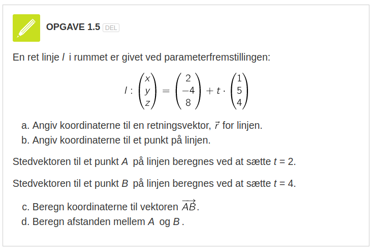
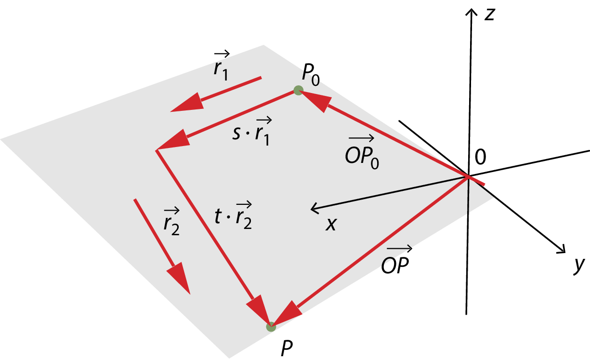

Anamorfoser…
A hva' for en fisk?
Matematik
Vibenshus Gymnasium
Ja, Anamorfoser
F.eks. 3D-reklamer på stadioner
Lidt mere inspiration
Matematikken bag
3D-koordinatsystemet
- Nu også en tredje akse, z-aksen.
- En af mange højrehåndsregler.

Geogebra kan også.
- Zoom : scrollhjul
- Rotér : venstre musetast
- Panorér : Shift + venstre musetast
- Stræk akserne : Shift + venstre musetast over en af aksernse
Punkter og vektorer i 3D
- Der gælder de samme regler, som i 2D.
- Dog med tre koordinater i stedet for to.
Punkter
Afstandsformlen
\[\left| AB \right| = \sqrt{\left( B_{x} - A_x\right)^2+\left( B_y - A_y \right)^2+\left( B_z-A_z \right)^2}\]
Eksempel
Opgave
- Beregn \(\left| AC \right|\) og \(\left| BC \right|\)
Vektorer
Vektor mellem to punkter A og B
\[\overrightarrow{AB} = \begin{pmatrix} B_x - A_x \\ B_y - A_y \\ B_z - A_z \\ \end{pmatrix}\]
Længde af vektor \(\vec{a}\)
Skalarprodukt mellem \(\vec{a}\) og \(\vec{b}\)
\[\vec{a} \cdot \vec{b} = \begin{pmatrix} a_x \\ a_y \\ a_z \end{pmatrix} \cdot \begin{pmatrix} b_x \\ b_y \\ b_z \end{pmatrix} = a_x \cdot b_x + a_y \cdot b_y + a_z \cdot b_z\]
Opgave
- Bestem koordinaterne til \(\overrightarrow{AB}\) og \(\overrightarrow{AC}\).
- Bestem skalarproduktet \(\overrightarrow{AB} \cdot \overrightarrow{AC}\).
Tjek efter i ggb
- Punkter nanvgives typisk med store bogstaver
A=(3,2,5) - Vektorer navngives typisk med små bogstaver
u=(1,2,3) - Vektor mellem to punkter
Vektor(<Punkt>,<Punkt>) - Skalarprodukt mellem to vektorer
u*v
Linjer i 3D
Linjer i 2D
- I kender allerede en ret linje i 2D
- F.eks. \(y=2x + 3\)
Samme linje i 3D?
- Kan den også tegnes i 3D?
- Ja da. Men det er ikke så sexet. Den ligger bare i xy-planen
- Kan den ikke gå op ad z-aksen?
- Ikke umiddelbart!
- Man kan lave en plan.
- Men det er stadig ikke en linje.
Punkter og vektorer to the rescue
- Vi kan lave rette linjer i 3D vha.
- vektorfunktioner/parameterfremstillinger.
En linje som en vektorfunktion
- En stedvektor \(\overrightarrow{OP}\) skal tegne en ret linje i 3D
- Den kan konstrueres summen af en vektor, som peger på et kendt punkt \(P_0\) og en retningsvektor multipliceret med en løbende parameter \(t\).
Altså
\begin{align*} \overrightarrow{OP}(t) &= \overrightarrow{OP}_0 + t \cdot \vec{r} \\ \begin{pmatrix} x(t) \\ y(t) \\z(t) \end{pmatrix} &= \begin{pmatrix} x_0 \\ y_0 \\ z_0 \end{pmatrix} + t \cdot \begin{pmatrix} r_x \\ r_y \\ r_z \end{pmatrix} \end{align*}
- Den tager vi lige i geogebra stille og roligt.
En linje som en vektorfunktion i geogebra
Opgave
Prøv jeres nyfundne viden af:

Kan de punkter og vektorer ikke bruges til andet?
Jo da!
Vi har da slet ikke fået nok endnu
Planer i 3D
Ja, lad os så komme i gang!
Planens parameterfremstilling

For en plan skal vi bruge et kendt punkt, to (ikke parallelle) retningvektorer samt to løbende parametre.
Altså
Den ta'r vi lige i ggb
Opgave
Tre punkter \(A=(1, 4, -8)\), \(B=(0,5,3)\) og \(C=(-6,7,2)\) er beliggende i planen \(\alpha\).
- Angiv en (af flere) parameterfremstilling for planen \(\alpha\).
Find skæringspunktet mellem planen \(\alpha\) og linjen \(l: \begin{pmatrix} x(u) \\ y(u) \\ z(u) \end{pmatrix} = \begin{pmatrix} 0 \\ -4 \\ 2 \end{pmatrix} + u \cdot \begin{pmatrix} -1 \\ 10 \\ 12 \end{pmatrix}\).
Hints:
- Opstil 3 ligninger med 3 ubekendte ved sætte hhv x, y og z lig hinanden for linjen og planen.
- Løs ligningssystemet for s, t og u vha CAS (geogebra, wordmat, maple etc)
- Indsæt den fundne u-værdi i linjens parameterfremstilling og bestem herved koordinaterne til skæringspunktet.
3 ligninger med 3 ubekendte??
Det må kunne gøres nemmere.
Planens ligning i 3D
Planens ligning på normalform
- Med en normalvektor \(\vec{n} = \begin{pmatrix} a \\ b \\ c \end{pmatrix}\),
- et kendt punkt \(P_0 = (x_0, y_0 , z_0)\) i planen
- samt et vilkårligt punkt i planen \(P=(x,y,z)\),
- er det muligt at opbygge en ligning for planen vha følgende skalarprodukt:
Normalvektor og krydsprodukt
- En plans normalvektor står vinkelret på planen.
- En normalvektor kan dannes vha krydsproduktet mellem planens to retningsvektorer
- Tjek lige, at det stemmer på figuren.
Simpel opgave
- Find den simplest mulige ligning til hhv. xy-, xz- og yz-planen.
- Alle hjælpemidler er tilladte.
Skæringspunkt mellem linje og plan
Lad os bestemme skæringspunktet mellem linjen \(l: \begin{pmatrix} x(t) \\ y(t) \\ z(t) \end{pmatrix} = \begin{pmatrix} 0 \\ -4 \\ 2 \end{pmatrix} + t \cdot \begin{pmatrix} -1 \\ 10 \\ 12 \end{pmatrix}\) og xy-planen efter opskriften:
- Indsæt udtrykkene for x(t), y(t) og z(t) for linjens parameterfremstilling på x's, y's og z's plads i planens ligning.
- Isolér t i den fremkomne ligning (Ahh, nu er der kun én ligning, der skal løses)
- Indsæt t i linjens parameterfremstilling.
- xy-planen kan beskrives med ligningen \[z=0\]
- \(z(t)=2+t \cdot 12\) indsættes i stedet for x i planens ligning, \[2+12t = 0\]
- Ligningen løses til \[t=-\frac{1}{6}\]
- Resultatet indsættes i linjens parameterfremstilling, \[\begin{pmatrix} x\left(-\frac{1}{6}\right) \\ y\left(-\frac{1}{6}\right) \\ z\left(-\frac{1}{6}\right) \end{pmatrix} = \begin{pmatrix} 0 \\ -4 \\ 2 \end{pmatrix} - \frac{1}{6} \cdot \begin{pmatrix} -1 \\ 10 \\ 12 \end{pmatrix}=\begin{pmatrix} 0.1667 \\ -5.667 \\ 0\end{pmatrix}\]
Det ser da meget rigtigt ud!
Design af simpel anamorfose
V for Vibenshus
a4-papir
- Afsæt hjørnerne af et a4-papir i xy-planen i geogebra.
- a4 har dimensionerne: bredde 21 cm, højde 29.7 cm
- Ét forslag kan være punkterne
- (0,0,0)
- (21,0,0)
- (21,29.7,0)
- (0,29.7,0)
Opretstående V
- Tegn en skitse af et stort V på et stykke papir.
- Indsæt punkter, som kan hjælpe til med at tegne konturen af bogstavet V.
- F.eks.
- (8,0,0)
- (2.67,0,8)
- (6.67,0,8)
- (10,0,3)
- (13.33,0,8)
- (17.33,0,0)
- (12,0,0)
- Det angivne V er konstrueret til at have en højde på 8 cm.
Valg af synspunkt
- Vælg et passende punkt, hvorfra V'et skal betragtes.
- F.eks.
- (10,-40,30)
- Det angivne synspunkt er valgt til at være 40 cm og 30 cm fra det opstillede V i hhv. vandret og lodret retning.
Synslinjer
- Opstil vektorfunktioner for alle linjer, som går fra synspunktet til punkterne på V'et.
- Bestem først en retningsvektor, med koordinaterne \(\vec{r} = \begin{pmatrix} r_x\\r_y\\r_z \end{pmatrix}\).
- Vælg et kendt, som linjen går igennem (f.eks. synspunktet), med koordinaterne \(P_0 = \begin{pmatrix} P_x \\ P_y \\ P_z \end{pmatrix}\)
- Kombinér til en vektorfunktion af typen \[\begin{pmatrix} x(t) \\ y(t) \\ z(t) \end{pmatrix} = \begin{pmatrix} r_x \cdot t + P_x\\ r_y \cdot t + P_y \\ r_z \cdot t +P_z \end{pmatrix}\]
- Hvis I er smarte, kan I oprette en funktion/ligning, hvor I kun skal ændre på koordinaterne til ét punkt.
- Indskriv jeres linjer vha kommando'en
curve=/=kurvei geogebra. - (Alternativt kan man kontruere alle linjer i geogebra, men så skal I regne jer frem til mindst to af linjerne).
Afmærkning på vandret plan
- Bestem skæringspunkterne mellem synslinjerne og planen for a4-papiret (xy-planen).
- Indsæt linjens parameterfremstilling på x,y og z's plads i planens ligning.
- Løs den fremkomne ligning for t.
- Indsæt t i linjens parameterfremstilling for at bestemme koordinaterne til skæringspunktet.
- Igen, hvis I er snu, kan I konstruere en funktion/ligning, så der kun skal ændres få tal fra gang til gang.
- (Alternativt kan skæringspunkterne bestemmes direkte i geogebra. Husk igen at regne jer frem til mindst to skæringspunkter.)
Den store finale
- Overfør jeres skæringspunkter mellem synslinjer og plan til et rigtigt a4-papir.
- Brug lineal og tegneredskaber.
- Klip jeres V ud af papiret.
- Læg V'et foran jer.
- Placér jeres øjne i ca samme punkt, som jeres synspunkt i geogebra.
- Træder jeres V frem for jer? Så har I gjort et bedre stykke arbejde end mig. :)
- Det kan hjælpe at holde det ene øje lukket, eller tage et billede med telefonen.
Dagens opgave
Udsmyk skolegården med top swag statements
Men I kan gøre det bedre end det!
Regler
- Hver klasse/gruppe får en position/et vindue på en etage i hovedbygningen eller kantinebygningen.
- Udvælg et område i skolegården. Der skal være plads til alle!
- Udmål og opstil et rumligt koordinatsystem, hvor jeres synspunkt og område kan placeres hensigtsmæssigt.
- Design bogstaver, ord, symboler, etc. med udgangspunkt i jeres synspunkt og område.
- Overfør til papirsdug.
- Afprøv jeres mesterværker i skolegården!
Inspiration
- Bogstaverne er ca 3.5 meter høje (lange)
Resultatet
- Bogstaverne er designet til at se ud til at være 1.2 meter høje.
- 3D-effekten er nok bedst med mennesker på billedet.
- Det er godt, at de holder fast, så det ikke vælter.

- Nu med 3D-effekt!
Reglerne igen
- Hver klasse/gruppe får en position/et vindue på en etage i hovedbygningen eller kantinebygningen.
- Udvælg et område i skolegården. Der skal være plads til alle!
- Udmål og opstil et rumligt koordinatsystem, hvor jeres synspunkt og område kan placeres hensigtsmæssigt.
- Design bogstaver, ord, symboler, etc. med udgangspunkt i jeres synspunkt og område.
- Overfør til papirsdug.
- Afprøv jeres mesterværker i skolegården!
God arbejdslyst!
Men, kan det ikke blive vildere end det?
Jo da… Vildere klovn, vildere!
Vildere anamorfoser
F.eks.
- På inder- og ydersider af kegler
- På overfladen af cylindre
- Spejlinger i cylindre
- På vægge og lofter
Konkurrence
- Udsmyk skolen med den vildeste anamorfe reklame for skolen, som I kan komme på.
- Intern konkurrence i klasserne. Udvælg de 2 bedste forslag fra hver klasse.
- De vindende forslag, fra hver klasse, konkurrerer med/mod hinanden.
- Hvis det er rigtig, rigtig godt, må vi tale med ledelsen om muligheden for at lave det til en permanent installation. Ellers må der være tale om en pop-up udstilling. :)
Inspiration
I de følgende slides kommer der en række inspirationskilder suppleret med noget mere baggrundsinfo.
Skolens facade
- Design f.eks. tekst, som træder tydeligt frem på skolens facade, når man står det helt rigtige sted på fortorvet.
- Modellér og konstruér som I har prøvet det før.
Anamorfe billeder
DIY anamorfe illusioner
GIMPanvendes som billedredigeringsværktøj. Det er opensource og kan hentes på https://www.gimp.org/.- Vi har som udgangspunkt mulighed for at printe i a4 og a3.
Anamorfoser på cylindre
- De følgende billeder er designet til at blive sat på standard 33 cl. sodavandsdåser.
Anamorfoser på kegler
Man kan lave anamorfoser på indersiden (og ydersiden) af kegler.
Teorien bag
En generel elliptisk (dobbelt)kegle, der åbner op langs z-aksen, kan skrives som \[\frac{x^2}{a^2} + \frac{y^2}{b^2} = \frac{z^2}{c^2}\] Hvis man vil flytte spidsen til punktet \((x_0, y_0, z_0)\) er ligningen således ud \[\frac{(x-x_0)^2}{a^2} + \frac{(y-y_0)^2}{b^2} = \frac{(z-z_0)^2}{c^2}\] En (dobbelt)kegle symmetrisk om y-aksen med højde h og radius r, kan beskrives med ligningen \[x^2+z^2 = \frac{r^2}{h^2} \cdot \left( y-h \right)^2\]
En (dobbelt)kegle symmetrisk om y-aksen med højde h og radius r, kan beskrives med ligningen \[x^2+z^2 = \frac{r^2}{h^2} \cdot \left( y-h \right)^2\]
Procedure
- Modeller den figur, som skal vises i/på keglen (her M).
- Bestem parameterfremstilling for linjen gennem synpunktet (her B) og et punkt på figuren (her A).
- Bestem skæringspunktet mellem linjen og keglen ved at indsætte linjens x-, y- og z-funktioner i keglens ligning og løs for t. Indsæt det fundne t i linjens parameterfremstilling.
- Nu er punktet på keglen bestemt (her \(P(x_1,y_1,z_1)\)).
Det er dog besværligt at tegne inde i den færdige kegle. Tegn i stedet på et cirkeludsnit, og fold dette til en kegle efterfølgende.
Procedure
- Lad keglens samlingslinje gå langs oversiden af keglen i yz-planen.
- Bestem afstanden fra keglens spids til punktet (her a) vha \(a=\sqrt{x_1^2+\left( y_1-h \right)^2+z_1^2}\).
- Bestem punktets vinkel yz-planen og punktet (her \(\alpha\)) vha \(\alpha = \tan^{-1}\left(\frac{x_1}{z_1} \right)\)
Den endelige udfoldning
- Hvis cirkeludsnittets centervinkel til \(\frac{2 \pi}{3}\),
- vil vinklen til punktet målt fra samlingslinjen være \(\frac{\alpha}{3}\).
- Til højre ses det den udfoldede kegle med M'et.
- Se nærmere her: https://www.lmfk.dk/artikler/data/artikler/2103/2103_22.pdf
- og her: https://anamorphicart.wordpress.com/2010/04/22/putting-an-image-onto-a-cone/
Spejling på cylindre
Teorien bag
- M'et skal forestille at stå oprejst inde i cylinderen.
- Bestem linje gennem synspunkt og punkt på bogstavet.
- Bestem skæringspunkt mellem linje og cylinderens overflade. (Der er to skæringspunkter. Vælg den på forsiden).
- Cylinderens ligning er her \(x^2+y^2=R^2\).
- Skæringspunktet kaldes \(P_0(x_0, y_0, z_0)\)
- Normalvektor i \(P_0\) kan være \(\vec{n} = \begin{pmatrix} x_0, y_0, 0 \end{pmatrix}\)
- Retningsvektor for spejlingslinje findes som \[\vec{r}_1 = \vec{r} + 2 \vec{a} = 2 \vec{r}_{\vec{n}} - \vec{r} = 2 \cdot \frac{\vec{r}\cdot \vec{n}}{\left| \vec{n} \right|^2}\cdot \vec{n} - \vec{r}\] hvor \(\vec{a} = \vec{r}_{\vec{n}} - \vec{r}\)
- Opstil en parameterfremstilling for refleksionslinjen med \(\vec{r}_1\) som retningsvektor og \(P_0\) som kendt punkt.
- Bestem til sidst skæringspunktet mellem xy-planen og reflekstionslinjen.
- Man skal gøre dette for mange punkter, da rette linjer i M'et ikke bliver til rette linjer på xy-planen.
- Brug meget gerne et regneark til opsætning af beregningerne, så I til sidst kun skal indsætte koordinaterne til punkterne på bogstavet.
- Se mere her: https://www.lmfk.dk/artikler/data/artikler/2103/2103_22.pdf
- og her: https://anamorphicart.wordpress.com/2010/04/21/cylindrical-mirror-anamorphoses/
På vægge og lofter
Find mere info her: https://medium.com/@tqvinn/the-secret-to-anamorphic-illusions-853e3674209a